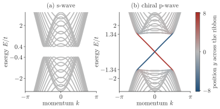
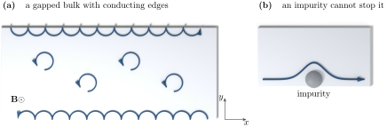

Page 10 of 16 of this session
5.14 Same gap and different topology in trivial s-wave and chiral p-wave pairing
Two superconductors can open a gap of the same size on the same Fermi surface. Can they still be two different phases of matter? They can, since for a single Fermi pocket the Chern number of the BdG bands is \(0\) for s-wave pairing and \(\pm2\) for chiral p-wave pairing. Only the second one has states at its edges.
\[\sigma_{xy} = \frac{e^2}{h}\, C, \qquad C = \sum_{n\ \text{filled}} \frac{1}{2\pi}\int_{\text{BZ}} \Omega_n(k)\, d^2k. \tag{3.4}\]
This is the Chern number of Section 3.5, the integral of the Berry curvature \(\Omega_n(k)\) over the Brillouin zone divided by \(2\pi\), summed over the filled bands \(n\). For a superconductor the filled bands are the BdG bands below zero energy, and here we use only the integer \(C\), computed in the same way from these bands.
This is the central point of the whole session. Two superconducting gaps can have completely identical spectral properties, where both fully gap the Fermi surface with, for example, the same minimum gap, and still be topologically different. Let us compare plain s-wave pairing, \(\Delta(\mathbf k) = \Delta_0\), with chiral p-wave pairing.
The chiral p-wave pairing is
\[\Delta_{p+ip}(\mathbf k) = \Delta_0\left(\sin k_x + i \sin k_y\right). \tag{5.15}\]
It can gap the same Fermi surface as the s-wave pairing \(\Delta_0\). For a single Fermi pocket around one zero of \(\Delta_{p+ip}(\mathbf k)\), as for \(0<|\mu|<4t\) on the square lattice, the BdG bands below zero have \(C=\pm2\), one unit from each spin block. For s-wave pairing \(C=0\), and the chiral pairing also gives \(C=0\) when the Fermi level is outside the band.
This pairing is an odd-parity, spin-triplet order, in agreement with (5.12) since \(\Delta_{p+ip}(-\mathbf k) = -\Delta_{p+ip}(\mathbf k)\), and it winds once around the origin of the complex plane as \(\mathbf k\) goes around the Fermi surface. Both (5.9) with \(\Delta_0\) and (5.9) with \(\Delta_{p+ip}\) can fully gap the same Fermi surface, so a measurement of the bulk gap alone cannot distinguish them. However, we can compute the Chern number of the occupied BdG bands for each case, in the same way as for the Chern number (3.4) of gapped bands in Session 3. The two results are completely different. The trivial s-wave state has Chern number \(0\), while the chiral p-wave state has Chern number \(\pm 2\). For a pocket around \(\Gamma\) or \((\pi,\pi)\) the sign is set by the chirality, \(p_x + ip_y\) or \(p_x - ip_y\), together with the side of the Fermi surface, filled or empty states inside the pocket.
What distinguishes them, as shown in Figure 5.4, is the winding of the phase of \(\Delta(\mathbf k)\) when \(\mathbf k\) goes once around the Fermi surface. This phase is constant for s-wave, and it makes one full turn for \(p+ip\).
The steps Why the winding of Delta gives one Chern unit per block
Each spin block of the BdG Hamiltonian has the form (5.8), a \(2\times2\) matrix that we write with the Pauli matrices \(\tau\) that act on the electron and the hole,
\[h_{\text{BdG}}(\mathbf k) = \begin{pmatrix} b_z & b_x - i b_y \\ b_x + i b_y & -b_z\end{pmatrix} = \mathbf b(\mathbf k)\cdot\boldsymbol\tau, \qquad \mathbf b = \left(\mathrm{Re}\,\Delta,\ -\mathrm{Im}\,\Delta,\ \varepsilon\right).\]
The two energies are \(\pm|\mathbf b|\), which is (5.9), and the eigenvectors depend only on the direction \(\hat{\mathbf b}=\mathbf b/|\mathbf b|\), which is a point on the unit sphere. As \(\mathbf k\) covers the Brillouin zone, \(\hat{\mathbf b}\) covers the sphere a whole number of times, and the Chern number of the lower band counts these times, with a sign for the orientation. This is the same counting as for the gapped Dirac cone (3.7) of Section 3.10, where the plane of momenta around one Dirac point covers half of the sphere and gives the half-integer (3.8).
The simplest case is s-wave pairing, with a real \(\Delta=\Delta_0\). Then \(b_y=0\) everywhere, so \(\hat{\mathbf b}\) stays on the half circle of the sphere with \(b_y=0\) and \(b_x>0\). It covers no area, and \(C=0\).
For the chiral p-wave we take a pocket of filled states around \(\Gamma\), such as the square lattice with \(\varepsilon(\mathbf k)=-2t(\cos k_x+\cos k_y)-\mu\) and \(-4t<\mu<0\). Inside the pocket \(\varepsilon<0\), so \(\hat{\mathbf b}\) is on the southern half of the sphere, and on the Fermi surface \(\varepsilon=0\), so \(\hat{\mathbf b}\) is on the equator. Since the phase of \(\Delta_{p+ip}\) winds once around the Fermi surface, \(\hat{\mathbf b}\) goes once around the equator. To count the coverings we take one point of the sphere, the south pole, and count the momenta that reach it. It needs \(\Delta=0\) and \(\varepsilon<0\). The pairing (5.15) vanishes only at \(\Gamma\), \((\pi,0)\), \((0,\pi)\) and \((\pi,\pi)\), and only \(\Gamma\) is inside the pocket, so the south pole is reached once and \(|C|=1\).
The chiral p-wave of the notebook and of pyqula is a spin triplet whose pairs have one spin up and one spin down. Such a triplet enters the basis (5.6) with \(\Delta(\mathbf k)\) in one spin block and \(-\Delta(\mathbf k)\) in the other. The change \(\Delta\to-\Delta\) turns \(\mathbf b\) by \(\pi\) around the axis \(b_z\), which changes neither the covering nor its sign, so the two blocks have the same \(C\) and together they give \(\pm2\). With the Berry curvature of Session 3 and a pocket of filled states around \(\Gamma\), the block of \(p_x+ip_y\) has \(C=+1\) and the block of \(p_x-ip_y\) has \(C=-1\). A pocket of empty states, around \((\pi,\pi)\) for \(0<\mu<4t\), reverses both signs. So for a pocket around \(\Gamma\) or \((\pi,\pi)\) the sign of \(C\) is set by the chirality together with the side of the Fermi surface, filled or empty states inside the pocket. The ribbon of Schematic 5.13 also has a Fermi surface that encloses empty states, around \(\Gamma\), and its pairing is \(p_x+ip_y\) close to \(\Gamma\), so there the total is \(C=-2\).

This has the consequence that we expect from the bulk-boundary correspondence. In a finite system, the s-wave superconductor stays gapped everywhere, both in the bulk and at the edge, in the same way as a trivial insulator with Chern number zero. The chiral p-wave superconductor, on the other hand, is gapped in the bulk but has gapless chiral edge modes. On one edge there are \(|C|\) branches that all propagate in the same direction. Here there are two, one from each of the two spin blocks. The opposite edge has the same number of branches, which propagate in the opposite direction, as a state with Chern number \(\pm 2\) must have.
So on a ribbon we see two sets of branches that propagate in opposite directions, but they are localized on opposite edges and do not share one edge. These edge modes turn out to be fractions of an electron in a very specific and exact sense, since they are Majorana modes, and the rest of this session is about what this means. The two ribbons are computed with pyqula in Schematic 5.13, for the triangular lattice and the onsite energy of the notebook, and with delta=0.4 for both pairings.

g4_pwave_ribbon.py
h.add_onsite(-3.0) and h.add_pairing(mode=..., delta=0.4), the value of the notebook for the chiral p-wave, while the notebook takes delta=1.0 for the s-wave. The onsite energy \(-3\) is the chemical potential \(\mu=3\) for the band of pyqula, which runs from \(-3\) to \(6\), so the Fermi surface encloses a pocket of empty states around \(\Gamma\). The energy is in units of the hopping \(t\), and the momentum \(k\) along the ribbon is multiplied by the lattice constant. The color is the mean position \(y\) of each state across the ribbon, in units of the lattice constant, with the two edges at \(y=\pm8.2\). In (a) the gap is empty, and its smallest energy is \(0.40\). In (b) the smallest energy of the bulk is \(1.34\), and two lines cross the gap. The red one sits at the edge \(y>0\) and goes down with \(k\), and the blue one sits at the edge \(y<0\) and goes up. Each line is two branches, one from each spin block. The two gaps do not have the same size here, and what tells the two panels apart is not this size but the states inside the gap. For the bulk, h.get_chern() gives \(C=0\) in (a) and \(C=-2\) in (b), and the other chirality, \(p_x-ip_y\), gives \(C=+2\) on this model. Look at the gap, which only (b) crosses, with one line at each edge.The edge of a Chern insulator, which we built in Section 3.10 and Section 3.10b, is the model for what we expect here. The figure below shows it again.

Two pairings act on the same band,
\[\Delta_s=\Delta_0, \qquad \Delta_{p+ip}(\mathbf k)=\Delta_0\left(\sin k_x+i\sin k_y\right).\]
Both fully gap the same Fermi surface, with the same smallest energy. Which quantity tells them apart?
Show the answers
- A. ✗ False
This is false. Take the square lattice with \(\varepsilon(\mathbf k)=-2t(\cos k_x+\cos k_y)-\mu\), \(\mu=-2t\) and \(\Delta_0=0.2t\). The smallest energy is \(0.2t\) for both pairings, so a spectroscopy of the bulk does not tell them apart.
- B. ✓ True
This is true. The phase of \(\Delta_{p+ip}\) winds once around the Fermi surface, and the phase of \(\Delta_s\) does not. So on a single pocket \(C=\pm2\) for the chiral pairing, one unit from each spin block, and \(C=0\) for the s-wave pairing.
- C. ✗ False
This is false. The pockets belong to the normal state \(\varepsilon(\mathbf k)\), which is the same for both pairings. On the square lattice at \(\mu=-2t\) both have one pocket, around \(\Gamma\).
We replace \(p_x+ip_y\) by \(p_x-ip_y\), and the bulk gap does not change. What happens to the edge modes of a ribbon?
Show the answers
- A. ✗ False
This is false. The order \(p_x-ip_y\) is chiral too, with the opposite winding. Its Chern number has the opposite sign and the same size \(2\), so it is not \(0\), and two edge branches are still required.
- B. ✗ False
This is false. The same gap does not fix the direction. The sign of the Chern number sets it, so a branch that moves right on the top edge now moves left.
- C. ✓ True
This is true. The Chern number changes sign, for example from \(+2\) to \(-2\) for a pocket of filled states around \(\Gamma\). The number \(|C|=2\) of branches does not change, and their direction on a given edge flips.
Each picture is the BdG spectrum of a ribbon, for one of three pairings. The color is the position of a state across the ribbon. Blue and red are the two edges, and grey is the middle. Which ribbon comes from a bulk with \(C=\pm2\)?
Show the answers
- A. ✗ False
This is false. This is the nodal f-wave pairing. Its gap vanishes on the lines from \(\Gamma\) to \(M\), which cross the Fermi surface, so the bulk has no gap. The grey bulk states come close to zero near \(k=0\) and \(k=\pm1.3\), and no state sits at an edge. Without a gap the Chern number is not defined.
- B. ✗ False
This is false. This is the s-wave pairing. The gap of the ribbon is empty, with the smallest energy \(0.40\), which is the \(\Delta\) of the bulk, and the bulk has \(C=0\).
- C. ✓ True
This is true. This is the chiral p-wave pairing. The red line and the blue line cross the gap at the two edges, in opposite directions, and each line is two branches. The bulk has \(C=-2\), which gives \(|C|=2\) branches at each edge.
On a small Fermi pocket around \(\Gamma\) we take the circle \(\mathbf k=0.3\,(\cos\theta,\sin\theta)\). Show that the phase of \(\Delta_{p+ip}(\mathbf k)=\Delta_0(\sin k_x+i\sin k_y)\) winds once around the origin as \(\theta\) goes from \(0\) to \(2\pi\), and minus once for \(p_x-ip_y\). Then find the smallest and the largest \(|\Delta_{p+ip}|\) on the circle.
Solution
On the circle the pairing is
\[\frac{\Delta_{p+ip}}{\Delta_0}=\sin(0.3\cos\theta)+i\sin(0.3\sin\theta).\]
Since \(\sin x\) has the sign of \(x\) for \(|x|<\pi\), the real part has the sign of \(\cos\theta\) and the imaginary part the sign of \(\sin\theta\). So \(\Delta_{p+ip}\) is always in the same quadrant of the complex plane as \(\mathbf k\), and it crosses the two axes at the same angles \(\theta=0,\pi/2,\pi,3\pi/2\). As \(\theta\) goes once around, the phase goes once around in the same direction, which is the winding \(+1\). For \(p_x-ip_y\) the imaginary part changes sign, the phase turns in the opposite direction, and the winding is \(-1\).
For the modulus we use \(\sin^2x\approx x^2-x^4/3\), which gives
\[\frac{|\Delta_{p+ip}|^2}{\Delta_0^2}=\sin^2(0.3\cos\theta)+\sin^2(0.3\sin\theta)\approx 0.09-\frac{0.3^4}{3}\left(\cos^4\theta+\sin^4\theta\right).\]
The last factor is \(1\) on the axes and \(1/2\) on the diagonals. So the smallest value is at \(\theta=0\), with \(\sin^2 0.3=0.0873\), and the largest at \(\theta=\pi/4\), with \(2\sin^2(0.3/\sqrt2)=0.0887\). The modulus \(|\Delta_{p+ip}|\) goes from \(0.2955\Delta_0\) to \(0.2978\Delta_0\), within \(2\%\) of \(0.3\Delta_0\).
STM and ARPES measure \(|\Delta|\) and not its phase. For a weak pairing, with \(\Delta_0\) much smaller than \(tk_F=0.3t\), they see on such a pocket an almost uniform gap, close to that of an s-wave pairing \(0.3\Delta_0\). On the square lattice with first-neighbor hopping \(t\) and \(\mu=-2t(1+\cos0.3)\), about \(-3.911t\), whose pocket has the radius \(0.3\), the smallest energy is \(0.295\Delta_0\) for \(\Delta_0=0.05t\). It is \(0.28\Delta_0\) for \(\Delta_0=0.2t\), since a stronger pairing moves the minimum inside the pocket, where \(|\Delta|\) is smaller. The winding, which gives the Chern number, does not show up in the size of the gap, and it shows up in the states at the edge.
Notebook check-in: session5.ipynb, “Trivial and topological superconducting order parameters, bulk spectra” (Core), and “...edge spectra” (Core)
Build the s-wave and chiral p-wave BdG Hamiltonians next to each other, and check that their bulk spectra look similar, since both are gapped with a comparable gap size. Then move to a ribbon geometry and check that only the p-wave case has gapless chiral edge states, with branches of opposite velocity on the two edges of the ribbon. This is the distinction that the Chern number makes.
Try it. In the cell, plot_case("chiral_pwave",0.4) writes the Chern number in the title. Change 0.4 to 0.8. The Chern number keeps its magnitude 2 as long as the gap stays open, and the \(s\)-wave case keeps zero.
- In Section 5.16 the one-dimensional version of a topological superconductor, the Kitaev chain, has a Majorana zero mode at each end.
- In Section 6.16 the Chern number of a band is computed once more, now for magnons, which also have chiral edge modes.
- In Section 9.8 a vacancy in a chiral spin-triplet superconductor gives a mode inside the gap, which tells it apart from a trivial \(s\)-wave state with the same bulk spectrum.